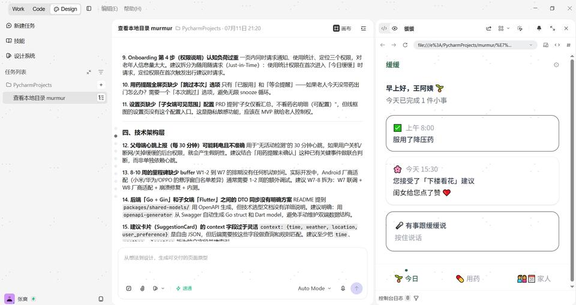

图 1 · 技术架构设计
与 TRAE 讨论双端信息架构、用药提醒 Snooze 机制、心跳上报策略，以及 Go + Gin 后端与 Flutter 子女端通过 OpenAPI 同步 DTO 的技术方案。右侧同步预览父母端「今日缓缓」交互原型。
Session ID1448490708806890:f92fa245f0de974478d40823d53232c1_6a50c65fc39ad11f4155c169.6a51a23ac4ec593ba50ff013.6a51a239c4ec593ba50ff011:TRAE Work CN.0.1.32.no_sid.no_ppe.T(2026/7/11 09:54:02)